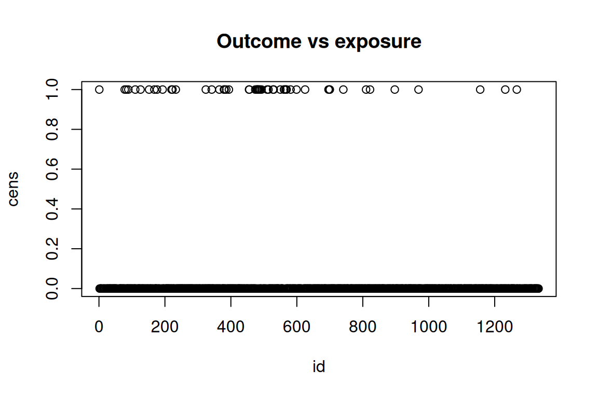
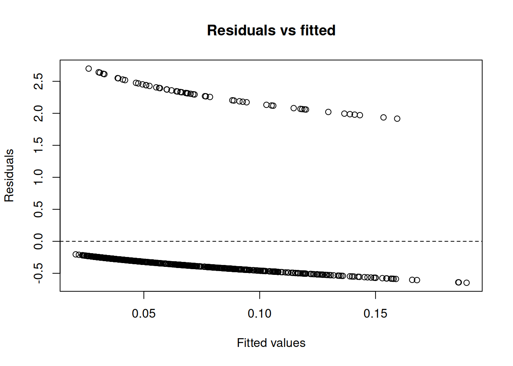

Code
data(rmb_datasets, package = "rmb")
rmb_datasets$study_design[rmb_datasets$object == "actg019"]
#> [1] "Randomized double-blind placebo-controlled trial of zidovudine in HIV infection."This vignette implements an expanded, dataset-organized RMB2e analysis workflow for actg019.
data(rmb_datasets, package = "rmb")
rmb_datasets$study_design[rmb_datasets$object == "actg019"]
#> [1] "Randomized double-blind placebo-controlled trial of zidovudine in HIV infection."data(actg019, package = "rmb")
dat <- actg019
dim(dat)
#> [1] 880 5
head(dat)
#> id days cens rx cd4
#> 1 1 502 1 0 359
#> 2 2 496 0 1 390
#> 3 4 565 0 0 183
#> 4 5 308 0 0 225
#> 5 6 383 0 0 456
#> 6 7 392 0 0 240
summary(dat)
#> id days cens rx
#> Min. : 1.0 Min. : 1.0 Min. :0.0000 Min. :0.0000
#> 1st Qu.: 325.8 1st Qu.:234.8 1st Qu.:0.0000 1st Qu.:0.0000
#> Median : 649.0 Median :373.0 Median :0.0000 Median :1.0000
#> Mean : 653.3 Mean :403.3 Mean :0.0625 Mean :0.5136
#> 3rd Qu.: 972.2 3rd Qu.:573.0 3rd Qu.:0.0000 3rd Qu.:1.0000
#> Max. :1333.0 Max. :746.0 Max. :1.0000 Max. :1.0000
#> cd4
#> Min. : 30.0
#> 1st Qu.:251.0
#> Median :343.5
#> Mean :332.2
#> 3rd Qu.:420.0
#> Max. :704.0var_labels <- vapply(dat, function(x) {
lbl <- attr(x, "label")
if (is.null(lbl) || length(lbl) == 0 || all(lbl == "")) NA_character_ else paste(as.character(lbl), collapse = "; ")
}, character(1))
stats::setNames(var_labels, names(dat))
#> id days
#> "Subject ID #" "Days Since Randomization"
#> cens rx
#> "Event Indicator" "Treatment"
#> cd4
#> "Baseline CD4+ lymphocyte count"For actg019 we ask: what is the association between a primary exposure and an outcome, after accounting for a plausible confounder?
is_binary <- function(x) {
x <- stats::na.omit(x)
if (length(x) == 0) {
return(FALSE)
}
if (is.logical(x)) {
return(TRUE)
}
ux <- unique(x)
if (length(ux) > 2) {
return(FALSE)
}
if (is.factor(x)) {
return(TRUE)
}
is.numeric(x) && all(ux %in% c(0, 1))
}
is_count <- function(x) {
if (!is.numeric(x)) {
return(FALSE)
}
x <- stats::na.omit(x)
if (length(x) == 0) {
return(FALSE)
}
all(x >= 0 & abs(x - round(x)) < 1e-8) && length(unique(x)) > 2
}
candidate_vars <- names(dat)[vapply(dat, function(x) {
is.numeric(x) || is.factor(x) || is.logical(x)
}, logical(1))]
continuous_vars <- candidate_vars[vapply(dat[candidate_vars], function(x) {
is.numeric(x) && length(unique(stats::na.omit(x))) > 10
}, logical(1))]
binary_vars <- candidate_vars[vapply(dat[candidate_vars], is_binary, logical(1))]
count_vars <- candidate_vars[vapply(dat[candidate_vars], is_count, logical(1))]
outcome_var <- if (length(binary_vars) > 0) {
binary_vars[1]
} else if (length(continuous_vars) > 0) {
continuous_vars[1]
} else if (length(count_vars) > 0) {
count_vars[1]
} else if (length(candidate_vars) > 0) {
candidate_vars[1]
} else {
NA_character_
}
remaining_vars <- setdiff(candidate_vars, outcome_var)
exposure_var <- if (length(remaining_vars) > 0) remaining_vars[1] else NA_character_
confounder_var <- if (length(remaining_vars) > 1) remaining_vars[2] else NA_character_
model_family <- if (!is.na(outcome_var) && outcome_var %in% binary_vars) {
"binomial"
} else if (!is.na(outcome_var) && outcome_var %in% count_vars) {
"poisson"
} else {
"gaussian"
}
can_fit_model <- !is.na(outcome_var) && !is.na(exposure_var)
c(
outcome = outcome_var,
exposure = exposure_var,
confounder = confounder_var,
family = model_family,
can_fit_model = can_fit_model
)
#> outcome exposure confounder family can_fit_model
#> "cens" "id" "days" "binomial" "TRUE"We use cens as the outcome and id as the primary exposure, with days as a candidate confounder.
if (!is.na(exposure_var) && !is.na(confounder_var)) {
cat(
"```{mermaid}
",
"flowchart LR
",
" C[", confounder_var, "] --> E[", exposure_var, "]
",
" C --> Y[", outcome_var, "]
",
" E --> Y
",
"```
",
sep = ""
)
} else if (!is.na(exposure_var)) {
cat(
"```{mermaid}
",
"flowchart LR
",
" E[", exposure_var, "] --> Y[", outcome_var, "]
",
"```
",
sep = ""
)
} else {
cat("Not enough variables to draw a DAG for this dataset.\n")
}We start by checking the analysis sample and the marginal distributions of the selected variables.
analysis_vars <- unique(stats::na.omit(c(outcome_var, exposure_var, confounder_var)))
if (length(analysis_vars) == 0) {
analysis_df <- data.frame()
c(n_total = nrow(dat), n_complete = 0, p_complete = 0)
cat("No numeric, logical, or factor variables available for analysis.\n")
} else {
analysis_df <- dat[, analysis_vars, drop = FALSE]
analysis_df <- stats::na.omit(analysis_df)
c(
n_total = nrow(dat),
n_complete = nrow(analysis_df),
p_complete = nrow(analysis_df) / nrow(dat)
)
summary(analysis_df)
}
#> cens id days
#> Min. :0.0000 Min. : 1.0 Min. : 1.0
#> 1st Qu.:0.0000 1st Qu.: 325.8 1st Qu.:234.8
#> Median :0.0000 Median : 649.0 Median :373.0
#> Mean :0.0625 Mean : 653.3 Mean :403.3
#> 3rd Qu.:0.0000 3rd Qu.: 972.2 3rd Qu.:573.0
#> Max. :1.0000 Max. :1333.0 Max. :746.0if (nrow(analysis_df) == 0 || is.na(exposure_var) || is.na(outcome_var)) {
plot.new()
text(0.5, 0.5, "No EDA plot: insufficient variables or complete cases")
} else if (is.numeric(analysis_df[[outcome_var]]) &&
is.numeric(analysis_df[[exposure_var]])) {
plot(
analysis_df[[exposure_var]],
analysis_df[[outcome_var]],
xlab = exposure_var,
ylab = outcome_var,
main = "Outcome vs exposure"
)
} else if (is.numeric(analysis_df[[outcome_var]])) {
boxplot(
analysis_df[[outcome_var]] ~ as.factor(analysis_df[[exposure_var]]),
xlab = exposure_var,
ylab = outcome_var,
main = "Outcome by exposure"
)
} else {
plot.new()
text(0.5, 0.5, "No simple EDA plot available for selected variables")
}
Following the GLM model-fitting process, we specify an unadjusted model and a model adjusted for the candidate confounder.
if (can_fit_model && nrow(analysis_df) > 0) {
if (inherits(analysis_df[[outcome_var]], "haven_labelled")) {
analysis_df[[outcome_var]] <- as.numeric(analysis_df[[outcome_var]])
}
if (inherits(analysis_df[[exposure_var]], "haven_labelled")) {
analysis_df[[exposure_var]] <- as.numeric(analysis_df[[exposure_var]])
}
if (!is.na(confounder_var) &&
inherits(analysis_df[[confounder_var]], "haven_labelled")) {
analysis_df[[confounder_var]] <- as.numeric(analysis_df[[confounder_var]])
}
if (is.logical(analysis_df[[outcome_var]])) {
analysis_df[[outcome_var]] <- as.integer(analysis_df[[outcome_var]])
}
if (is.logical(analysis_df[[exposure_var]])) {
analysis_df[[exposure_var]] <- as.integer(analysis_df[[exposure_var]])
}
if (!is.na(confounder_var) && is.logical(analysis_df[[confounder_var]])) {
analysis_df[[confounder_var]] <- as.integer(analysis_df[[confounder_var]])
}
if (model_family == "binomial") {
outcome_values <- sort(unique(stats::na.omit(analysis_df[[outcome_var]])))
if (length(outcome_values) == 2) {
analysis_df[[outcome_var]] <- as.integer(
analysis_df[[outcome_var]] == outcome_values[2]
)
}
}
formula_unadjusted <- stats::as.formula(paste(outcome_var, "~", exposure_var))
formula_adjusted <- if (!is.na(confounder_var)) {
stats::as.formula(paste(outcome_var, "~", exposure_var, "+", confounder_var))
} else {
formula_unadjusted
}
list(
family = model_family,
unadjusted = formula_unadjusted,
adjusted = formula_adjusted
)
} else {
formula_unadjusted <- NULL
formula_adjusted <- NULL
cat("Model specification skipped: insufficient variables or complete cases.\n")
}
#> $family
#> [1] "binomial"
#>
#> $unadjusted
#> cens ~ id
#>
#> $adjusted
#> cens ~ id + daysfit_unadjusted <- NULL
fit_adjusted <- NULL
if (!is.null(formula_unadjusted) && nrow(analysis_df) >= 20) {
fit_function <- if (model_family == "gaussian") stats::lm else stats::glm
fit_args <- if (model_family == "gaussian") {
list(data = analysis_df)
} else {
list(data = analysis_df, family = model_family)
}
fit_unadjusted <- tryCatch(
do.call(fit_function, c(list(formula = formula_unadjusted), fit_args)),
error = identity
)
fit_adjusted <- tryCatch(
do.call(fit_function, c(list(formula = formula_adjusted), fit_args)),
error = identity
)
if (inherits(fit_unadjusted, "error") || inherits(fit_adjusted, "error")) {
cat("Model fitting did not converge for this variable set.\n")
} else {
summary(fit_unadjusted)
summary(fit_adjusted)
}
} else {
cat("Parameter estimation skipped: fewer than 20 complete observations.\n")
}
#>
#> Call:
#> (function (formula, family = gaussian, data, weights, subset,
#> na.action, start = NULL, etastart, mustart, offset, control = list(...),
#> model = TRUE, method = "glm.fit", x = FALSE, y = TRUE, singular.ok = TRUE,
#> contrasts = NULL, ...)
#> {
#> cal <- match.call()
#> if (is.character(family))
#> family <- get(family, mode = "function", envir = parent.frame())
#> if (is.function(family))
#> family <- family()
#> if (is.null(family$family)) {
#> print(family)
#> stop("'family' not recognized")
#> }
#> if (missing(data))
#> data <- environment(formula)
#> mf <- match.call(expand.dots = FALSE)
#> m <- match(c("formula", "data", "subset", "weights", "na.action",
#> "etastart", "mustart", "offset"), names(mf), 0L)
#> mf <- mf[c(1L, m)]
#> mf$drop.unused.levels <- TRUE
#> mf[[1L]] <- quote(stats::model.frame)
#> mf <- eval(mf, parent.frame())
#> if (identical(method, "model.frame"))
#> return(mf)
#> if (!is.character(method) && !is.function(method))
#> stop("invalid 'method' argument")
#> if (identical(method, "glm.fit"))
#> control <- do.call("glm.control", control)
#> mt <- attr(mf, "terms")
#> Y <- model.response(mf, "any")
#> if (length(dim(Y)) == 1L) {
#> nm <- rownames(Y)
#> dim(Y) <- NULL
#> if (!is.null(nm))
#> names(Y) <- nm
#> }
#> X <- if (!is.empty.model(mt))
#> model.matrix(mt, mf, contrasts)
#> else matrix(, NROW(Y), 0L)
#> weights <- as.vector(model.weights(mf))
#> if (!is.null(weights) && !is.numeric(weights))
#> stop("'weights' must be a numeric vector")
#> if (!is.null(weights) && any(weights < 0))
#> stop("negative weights not allowed")
#> offset <- as.vector(model.offset(mf))
#> if (!is.null(offset)) {
#> if (length(offset) != NROW(Y))
#> stop(gettextf("number of offsets is %d should equal %d (number of observations)",
#> length(offset), NROW(Y)), domain = NA)
#> }
#> mustart <- model.extract(mf, "mustart")
#> etastart <- model.extract(mf, "etastart")
#> fit <- eval(call(if (is.function(method)) "method" else method,
#> x = X, y = Y, weights = weights, start = start, etastart = etastart,
#> mustart = mustart, offset = offset, family = family,
#> control = control, intercept = attr(mt, "intercept") >
#> 0L, singular.ok = singular.ok))
#> if (length(offset) && attr(mt, "intercept") > 0L) {
#> fit2 <- eval(call(if (is.function(method)) "method" else method,
#> x = X[, "(Intercept)", drop = FALSE], y = Y, mustart = fit$fitted.values,
#> weights = weights, offset = offset, family = family,
#> control = control, intercept = TRUE))
#> if (!fit2$converged)
#> warning("fitting to calculate the null deviance did not converge -- increase 'maxit'?")
#> fit$null.deviance <- fit2$deviance
#> }
#> if (model)
#> fit$model <- mf
#> fit$na.action <- attr(mf, "na.action")
#> if (x)
#> fit$x <- X
#> if (!y)
#> fit$y <- NULL
#> structure(c(fit, list(call = cal, formula = formula, terms = mt,
#> data = data, offset = offset, control = control, method = method,
#> contrasts = attr(X, "contrasts"), xlevels = .getXlevels(mt,
#> mf))), class = c(fit$class, c("glm", "lm")))
#> })(formula = cens ~ id + days, family = "binomial", data = structure(list(
#> cens = c(1L, 0L, 0L, 0L, 0L, 0L, 0L, 0L, 0L, 0L, 0L, 0L,
#> 0L, 0L, 0L, 0L, 0L, 0L, 0L, 0L, 0L, 0L, 0L, 0L, 0L, 0L, 0L,
#> 0L, 0L, 0L, 0L, 0L, 0L, 0L, 0L, 0L, 0L, 0L, 0L, 0L, 0L, 0L,
#> 0L, 0L, 0L, 0L, 0L, 0L, 0L, 0L, 1L, 0L, 0L, 1L, 0L, 0L, 0L,
#> 0L, 0L, 1L, 0L, 0L, 0L, 0L, 0L, 0L, 0L, 0L, 0L, 0L, 0L, 0L,
#> 0L, 0L, 1L, 0L, 0L, 0L, 0L, 0L, 0L, 0L, 0L, 0L, 0L, 1L, 0L,
#> 0L, 0L, 0L, 0L, 0L, 0L, 0L, 0L, 0L, 0L, 0L, 0L, 0L, 0L, 0L,
#> 1L, 0L, 0L, 0L, 0L, 0L, 0L, 0L, 0L, 1L, 0L, 0L, 0L, 0L, 0L,
#> 0L, 0L, 1L, 0L, 0L, 0L, 0L, 0L, 0L, 0L, 1L, 0L, 0L, 0L, 0L,
#> 0L, 0L, 0L, 0L, 0L, 0L, 0L, 0L, 0L, 0L, 0L, 0L, 0L, 0L, 0L,
#> 1L, 0L, 0L, 1L, 0L, 0L, 0L, 0L, 0L, 1L, 0L, 0L, 0L, 0L, 0L,
#> 0L, 0L, 0L, 0L, 0L, 0L, 0L, 0L, 0L, 0L, 0L, 0L, 0L, 0L, 0L,
#> 0L, 0L, 0L, 0L, 0L, 0L, 0L, 0L, 0L, 0L, 0L, 0L, 0L, 0L, 0L,
#> 0L, 0L, 0L, 0L, 0L, 0L, 0L, 0L, 0L, 0L, 0L, 0L, 0L, 0L, 0L,
#> 0L, 0L, 0L, 0L, 0L, 0L, 0L, 0L, 0L, 0L, 0L, 1L, 0L, 0L, 0L,
#> 0L, 0L, 0L, 0L, 0L, 0L, 0L, 0L, 0L, 0L, 1L, 0L, 0L, 0L, 0L,
#> 0L, 0L, 0L, 0L, 0L, 0L, 0L, 0L, 0L, 0L, 1L, 0L, 0L, 0L, 0L,
#> 0L, 0L, 0L, 0L, 0L, 1L, 0L, 1L, 0L, 0L, 0L, 1L, 0L, 0L, 0L,
#> 0L, 0L, 1L, 0L, 0L, 0L, 0L, 0L, 0L, 0L, 0L, 0L, 0L, 0L, 0L,
#> 0L, 0L, 0L, 0L, 0L, 0L, 0L, 0L, 0L, 0L, 0L, 0L, 0L, 0L, 0L,
#> 0L, 0L, 0L, 0L, 0L, 0L, 0L, 0L, 0L, 0L, 0L, 0L, 1L, 1L, 0L,
#> 0L, 0L, 0L, 0L, 0L, 0L, 0L, 0L, 0L, 0L, 1L, 0L, 0L, 1L, 1L,
#> 1L, 0L, 1L, 1L, 0L, 1L, 0L, 1L, 0L, 0L, 0L, 1L, 0L, 0L, 0L,
#> 0L, 0L, 0L, 0L, 1L, 0L, 1L, 0L, 0L, 0L, 0L, 0L, 0L, 0L, 0L,
#> 0L, 0L, 1L, 0L, 1L, 0L, 0L, 0L, 0L, 0L, 0L, 0L, 0L, 0L, 0L,
#> 0L, 0L, 1L, 0L, 0L, 0L, 0L, 0L, 0L, 0L, 1L, 1L, 0L, 1L, 1L,
#> 0L, 1L, 0L, 0L, 0L, 0L, 0L, 0L, 0L, 0L, 1L, 0L, 0L, 0L, 0L,
#> 0L, 0L, 0L, 0L, 0L, 0L, 1L, 0L, 0L, 0L, 0L, 0L, 0L, 0L, 0L,
#> 0L, 0L, 0L, 0L, 0L, 0L, 0L, 1L, 0L, 0L, 0L, 0L, 0L, 0L, 0L,
#> 0L, 0L, 0L, 0L, 0L, 0L, 0L, 0L, 0L, 0L, 0L, 0L, 0L, 0L, 0L,
#> 0L, 0L, 0L, 0L, 0L, 0L, 0L, 0L, 0L, 0L, 0L, 0L, 0L, 0L, 0L,
#> 0L, 0L, 0L, 0L, 0L, 0L, 0L, 0L, 1L, 0L, 0L, 1L, 1L, 0L, 0L,
#> 0L, 0L, 0L, 0L, 0L, 0L, 0L, 0L, 0L, 0L, 0L, 0L, 0L, 0L, 0L,
#> 0L, 0L, 0L, 0L, 0L, 0L, 0L, 0L, 0L, 0L, 0L, 1L, 0L, 0L, 0L,
#> 0L, 0L, 0L, 0L, 0L, 0L, 0L, 0L, 0L, 0L, 0L, 0L, 0L, 0L, 0L,
#> 0L, 0L, 0L, 0L, 0L, 0L, 0L, 0L, 0L, 0L, 0L, 0L, 0L, 0L, 0L,
#> 0L, 0L, 0L, 0L, 0L, 0L, 0L, 0L, 0L, 0L, 0L, 0L, 0L, 1L, 0L,
#> 0L, 0L, 0L, 0L, 0L, 0L, 0L, 1L, 0L, 0L, 0L, 0L, 0L, 0L, 0L,
#> 0L, 0L, 0L, 0L, 0L, 0L, 0L, 0L, 0L, 0L, 0L, 0L, 0L, 0L, 0L,
#> 0L, 0L, 0L, 0L, 0L, 0L, 0L, 0L, 0L, 0L, 0L, 0L, 0L, 0L, 0L,
#> 0L, 0L, 0L, 0L, 0L, 0L, 0L, 0L, 0L, 0L, 1L, 0L, 0L, 0L, 0L,
#> 0L, 0L, 0L, 0L, 0L, 0L, 0L, 0L, 0L, 0L, 0L, 0L, 0L, 0L, 0L,
#> 0L, 0L, 0L, 0L, 0L, 0L, 0L, 0L, 0L, 0L, 0L, 0L, 0L, 0L, 0L,
#> 0L, 0L, 0L, 0L, 0L, 0L, 0L, 0L, 0L, 0L, 0L, 0L, 0L, 0L, 1L,
#> 0L, 0L, 0L, 0L, 0L, 0L, 0L, 0L, 0L, 0L, 0L, 0L, 0L, 0L, 0L,
#> 0L, 0L, 0L, 0L, 0L, 0L, 0L, 0L, 0L, 0L, 0L, 0L, 0L, 0L, 0L,
#> 0L, 0L, 0L, 0L, 0L, 0L, 0L, 0L, 0L, 0L, 0L, 0L, 0L, 0L, 0L,
#> 0L, 0L, 0L, 0L, 0L, 0L, 0L, 0L, 0L, 0L, 0L, 0L, 0L, 0L, 0L,
#> 0L, 0L, 0L, 0L, 0L, 0L, 0L, 0L, 0L, 0L, 0L, 0L, 0L, 0L, 0L,
#> 0L, 0L, 0L, 0L, 0L, 0L, 0L, 0L, 0L, 0L, 0L, 0L, 0L, 0L, 0L,
#> 0L, 0L, 0L, 0L, 0L, 0L, 0L, 0L, 0L, 0L, 0L, 0L, 0L, 0L, 0L,
#> 0L, 0L, 0L, 0L, 0L, 0L, 0L, 0L, 1L, 0L, 0L, 0L, 0L, 0L, 0L,
#> 0L, 0L, 0L, 0L, 0L, 0L, 0L, 0L, 0L, 0L, 0L, 0L, 0L, 0L, 0L,
#> 0L, 0L, 0L, 0L, 0L, 0L, 0L, 0L, 0L, 0L, 0L, 0L, 0L, 0L, 0L,
#> 0L, 0L, 0L, 0L, 0L, 0L, 0L, 0L, 1L, 0L, 0L, 0L, 0L, 0L, 0L,
#> 0L, 0L, 0L, 0L, 0L, 0L, 0L, 0L, 0L, 0L, 0L, 0L, 0L, 0L, 0L,
#> 0L, 1L, 0L, 0L, 0L, 0L, 0L, 0L, 0L, 0L, 0L, 0L, 0L, 0L, 0L,
#> 0L, 0L, 0L, 0L, 0L, 0L, 0L, 0L, 0L, 0L, 0L, 0L, 0L, 0L, 0L,
#> 0L, 0L, 0L, 0L, 0L, 0L, 0L, 0L, 0L, 0L, 0L, 0L, 0L), id = c(1,
#> 2, 4, 5, 6, 7, 10, 13, 14, 16, 18, 21, 22, 25, 26, 27, 28,
#> 31, 32, 33, 34, 35, 37, 38, 40, 41, 43, 44, 45, 46, 48, 49,
#> 50, 51, 53, 54, 58, 62, 63, 64, 65, 66, 67, 68, 69, 72, 73,
#> 74, 75, 77, 78, 79, 81, 83, 84, 85, 86, 87, 88, 89, 90, 92,
#> 93, 94, 96, 97, 99, 100, 102, 103, 106, 107, 108, 109, 110,
#> 111, 112, 115, 118, 119, 120, 121, 122, 123, 125, 126, 127,
#> 128, 130, 132, 133, 134, 135, 138, 139, 141, 143, 144, 147,
#> 148, 149, 150, 152, 154, 155, 156, 157, 159, 162, 163, 165,
#> 168, 169, 170, 171, 172, 173, 174, 175, 176, 177, 180, 181,
#> 182, 184, 188, 191, 193, 194, 195, 196, 198, 201, 203, 204,
#> 205, 206, 207, 209, 210, 211, 212, 213, 215, 217, 218, 219,
#> 220, 221, 222, 223, 225, 226, 227, 228, 231, 233, 234, 235,
#> 237, 238, 240, 241, 243, 244, 245, 247, 248, 249, 251, 252,
#> 253, 254, 255, 258, 259, 260, 261, 264, 265, 266, 268, 269,
#> 271, 272, 273, 275, 276, 277, 278, 280, 281, 282, 283, 285,
#> 286, 289, 290, 292, 294, 295, 297, 298, 300, 302, 304, 305,
#> 306, 307, 310, 312, 314, 315, 316, 319, 321, 322, 323, 324,
#> 325, 326, 328, 329, 331, 332, 333, 334, 335, 337, 338, 339,
#> 341, 342, 343, 344, 345, 346, 348, 349, 352, 354, 355, 357,
#> 359, 360, 362, 364, 365, 366, 367, 369, 373, 374, 375, 376,
#> 377, 378, 379, 380, 381, 382, 383, 384, 386, 388, 389, 391,
#> 392, 393, 394, 395, 397, 398, 399, 400, 403, 404, 405, 407,
#> 408, 409, 412, 413, 414, 416, 419, 420, 422, 423, 424, 425,
#> 426, 427, 428, 429, 432, 433, 434, 436, 439, 440, 441, 444,
#> 445, 448, 449, 450, 452, 454, 455, 456, 457, 458, 461, 462,
#> 463, 465, 467, 469, 470, 471, 473, 474, 475, 477, 478, 479,
#> 480, 481, 482, 484, 485, 486, 488, 489, 490, 491, 492, 493,
#> 497, 498, 500, 502, 504, 505, 508, 510, 512, 514, 515, 516,
#> 518, 519, 520, 521, 524, 525, 526, 527, 528, 529, 530, 532,
#> 533, 534, 537, 538, 539, 540, 541, 543, 544, 545, 546, 550,
#> 551, 552, 553, 554, 556, 557, 558, 561, 562, 565, 566, 567,
#> 568, 569, 570, 571, 572, 573, 575, 578, 579, 580, 581, 582,
#> 584, 587, 588, 589, 590, 593, 594, 595, 597, 599, 600, 603,
#> 604, 605, 606, 608, 609, 610, 611, 613, 614, 620, 621, 623,
#> 624, 625, 626, 627, 628, 630, 632, 633, 634, 635, 638, 639,
#> 640, 641, 643, 645, 648, 650, 651, 653, 654, 656, 657, 659,
#> 661, 662, 663, 665, 666, 667, 669, 671, 672, 675, 676, 677,
#> 678, 682, 683, 684, 685, 686, 687, 689, 690, 693, 695, 696,
#> 697, 698, 699, 700, 701, 702, 704, 705, 706, 707, 709, 710,
#> 711, 713, 714, 715, 717, 719, 722, 723, 724, 726, 727, 728,
#> 729, 731, 732, 733, 734, 736, 738, 739, 741, 742, 743, 744,
#> 746, 747, 748, 751, 752, 753, 754, 755, 756, 758, 762, 763,
#> 764, 765, 766, 768, 769, 771, 773, 775, 777, 778, 780, 781,
#> 782, 785, 786, 787, 789, 790, 792, 793, 795, 796, 798, 799,
#> 800, 802, 805, 806, 807, 808, 809, 810, 813, 814, 815, 816,
#> 818, 819, 820, 821, 822, 823, 825, 826, 828, 830, 831, 833,
#> 835, 837, 838, 839, 840, 843, 844, 845, 847, 849, 850, 851,
#> 852, 855, 856, 858, 859, 860, 861, 862, 863, 864, 867, 868,
#> 871, 874, 875, 876, 878, 880, 881, 882, 884, 886, 887, 890,
#> 891, 892, 893, 894, 897, 898, 899, 900, 902, 903, 904, 905,
#> 906, 907, 910, 911, 913, 915, 917, 918, 919, 920, 921, 923,
#> 926, 928, 930, 931, 932, 933, 937, 938, 939, 940, 942, 943,
#> 944, 945, 946, 947, 949, 950, 953, 954, 955, 956, 958, 960,
#> 961, 962, 966, 967, 968, 969, 970, 971, 972, 973, 974, 975,
#> 978, 979, 983, 986, 988, 989, 991, 992, 993, 995, 996, 997,
#> 998, 1000, 1002, 1003, 1004, 1005, 1008, 1009, 1010, 1012,
#> 1013, 1016, 1017, 1018, 1020, 1021, 1023, 1025, 1028, 1030,
#> 1031, 1032, 1033, 1034, 1037, 1039, 1040, 1042, 1044, 1045,
#> 1049, 1050, 1051, 1052, 1054, 1055, 1058, 1059, 1060, 1062,
#> 1065, 1066, 1067, 1068, 1069, 1074, 1075, 1076, 1077, 1080,
#> 1081, 1083, 1085, 1088, 1089, 1090, 1092, 1093, 1096, 1097,
#> 1098, 1099, 1101, 1106, 1107, 1108, 1110, 1111, 1113, 1114,
#> 1117, 1118, 1119, 1122, 1123, 1124, 1126, 1128, 1129, 1130,
#> 1132, 1136, 1137, 1139, 1141, 1142, 1143, 1144, 1145, 1148,
#> 1150, 1151, 1153, 1154, 1155, 1156, 1157, 1159, 1160, 1161,
#> 1163, 1164, 1165, 1167, 1169, 1172, 1173, 1174, 1175, 1176,
#> 1179, 1181, 1182, 1185, 1186, 1187, 1189, 1190, 1192, 1193,
#> 1196, 1197, 1200, 1202, 1205, 1206, 1207, 1210, 1211, 1215,
#> 1217, 1218, 1219, 1221, 1222, 1224, 1226, 1228, 1229, 1230,
#> 1232, 1233, 1234, 1235, 1237, 1240, 1241, 1242, 1243, 1246,
#> 1249, 1250, 1251, 1252, 1253, 1254, 1255, 1257, 1258, 1259,
#> 1260, 1264, 1266, 1267, 1268, 1269, 1270, 1274, 1275, 1276,
#> 1278, 1281, 1284, 1285, 1289, 1290, 1291, 1292, 1294, 1296,
#> 1297, 1298, 1301, 1303, 1305, 1306, 1307, 1309, 1310, 1311,
#> 1312, 1314, 1316, 1319, 1320, 1321, 1322, 1324, 1325, 1326,
#> 1327, 1328, 1329, 1332, 1333), days = c(502, 496, 565, 308,
#> 383, 392, 43, 253, 264, 148, 672, 646, 405, 645, 616, 617,
#> 475, 512, 680, 462, 672, 139, 561, 560, 588, 566, 595, 582,
#> 520, 239, 504, 359, 530, 433, 510, 505, 307, 230, 257, 170,
#> 1, 1, 168, 143, 151, 645, 653, 653, 663, 644, 385, 630, 628,
#> 262, 473, 587, 550, 547, 337, 386, 370, 365, 314, 265, 262,
#> 146, 644, 651, 640, 651, 566, 621, 634, 616, 95, 617, 560,
#> 602, 532, 611, 616, 609, 527, 566, 532, 112, 420, 588, 415,
#> 586, 589, 287, 574, 554, 392, 340, 337, 319, 308, 284, 270,
#> 175, 234, 582, 588, 521, 308, 385, 48, 231, 91, 296, 559,
#> 514, 538, 550, 546, 505, 560, 389, 532, 478, 497, 478, 504,
#> 154, 562, 116, 560, 638, 607, 616, 201, 616, 610, 611, 574,
#> 536, 532, 567, 333, 1, 553, 546, 526, 540, 533, 100, 532,
#> 532, 333, 363, 356, 196, 286, 251, 59, 173, 108, 140, 329,
#> 668, 647, 432, 622, 9, 644, 641, 308, 61, 619, 624, 624,
#> 620, 590, 618, 467, 591, 27, 273, 563, 533, 540, 409, 539,
#> 540, 87, 538, 528, 511, 102, 535, 532, 511, 312, 314, 253,
#> 256, 17, 105, 256, 246, 169, 199, 182, 147, 143, 141, 152,
#> 119, 702, 648, 644, 644, 506, 626, 617, 601, 379, 627, 617,
#> 217, 459, 575, 610, 611, 591, 589, 563, 554, 553, 551, 98,
#> 515, 435, 545, 531, 529, 322, 257, 228, 196, 141, 558, 587,
#> 531, 561, 540, 563, 539, 557, 111, 592, 533, 545, 538, 533,
#> 534, 594, 582, 551, 503, 531, 284, 561, 554, 555, 556, 560,
#> 480, 543, 531, 531, 536, 539, 537, 552, 14, 531, 510, 510,
#> 358, 336, 343, 231, 138, 285, 252, 164, 162, 335, 335, 335,
#> 281, 301, 260, 280, 196, 338, 288, 196, 230, 197, 184, 717,
#> 732, 746, 716, 717, 428, 711, 690, 743, 716, 716, 737, 736,
#> 715, 700, 703, 672, 699, 212, 401, 674, 472, 455, 82, 621,
#> 636, 166, 573, 375, 555, 322, 83, 526, 532, 517, 331, 336,
#> 335, 196, 142, 177, 112, 471, 573, 119, 602, 545, 133, 338,
#> 161, 426, 420, 685, 63, 686, 609, 704, 362, 714, 11, 682,
#> 336, 700, 695, 710, 724, 727, 701, 678, 679, 496, 654, 692,
#> 698, 669, 687, 553, 642, 443, 359, 677, 330, 483, 618, 232,
#> 594, 264, 595, 567, 56, 583, 1, 248, 553, 476, 545, 552,
#> 501, 309, 100, 475, 454, 197, 412, 181, 345, 288, 267, 162,
#> 348, 340, 339, 336, 338, 274, 166, 186, 179, 60, 90, 439,
#> 651, 590, 592, 505, 531, 309, 562, 527, 448, 534, 527, 366,
#> 200, 197, 143, 113, 112, 532, 511, 528, 513, 530, 496, 511,
#> 518, 13, 337, 335, 302, 310, 315, 276, 272, 298, 287, 201,
#> 225, 194, 743, 728, 738, 721, 744, 726, 731, 649, 733, 84,
#> 498, 582, 727, 712, 706, 725, 701, 700, 700, 693, 380, 691,
#> 700, 698, 665, 665, 652, 672, 674, 656, 653, 672, 655, 644,
#> 639, 630, 577, 618, 623, 603, 436, 590, 589, 544, 581, 575,
#> 549, 557, 544, 544, 495, 543, 530, 364, 363, 362, 311, 364,
#> 363, 339, 343, 301, 273, 303, 280, 251, 235, 240, 222, 170,
#> 168, 148, 109, 99, 645, 722, 716, 728, 727, 721, 721, 728,
#> 711, 98, 700, 694, 534, 654, 567, 73, 699, 679, 71, 537,
#> 700, 673, 509, 556, 504, 674, 547, 672, 657, 642, 616, 614,
#> 16, 622, 588, 588, 84, 588, 422, 393, 586, 588, 422, 561,
#> 170, 558, 538, 540, 532, 532, 340, 201, 364, 371, 336, 182,
#> 336, 308, 280, 272, 210, 259, 226, 196, 195, 173, 147, 28,
#> 700, 709, 572, 699, 645, 627, 701, 594, 645, 644, 672, 644,
#> 590, 616, 616, 560, 588, 446, 561, 562, 538, 539, 313, 342,
#> 251, 253, 141, 225, 86, 112, 330, 148, 665, 601, 398, 504,
#> 549, 372, 310, 330, 309, 310, 280, 282, 223, 133, 140, 115,
#> 137, 9, 589, 545, 504, 504, 194, 679, 678, 545, 547, 560,
#> 365, 644, 642, 238, 634, 632, 643, 631, 426, 446, 567, 277,
#> 596, 64, 573, 55, 371, 290, 354, 363, 442, 339, 338, 1, 139,
#> 280, 273, 251, 215, 139, 43, 280, 329, 336, 310, 28, 223,
#> 223, 197, 190, 148, 168, 169, 141, 97, 1, 533, 532, 535,
#> 363, 364, 363, 364, 346, 335, 57, 168, 139, 140, 114, 342,
#> 252, 246, 185, 347, 374, 330, 307, 335, 246, 336, 288, 314,
#> 231, 249, 224, 196, 202, 175, 172, 143, 140, 236, 302, 280,
#> 251, 368, 365, 333, 327, 309, 297, 246, 225, 168, 161, 143,
#> 337, 364, 225, 197, 149, 140, 117, 546, 331, 525, 374, 476,
#> 529, 387, 364, 372, 359, 363, 336, 329, 279, 279, 283, 225,
#> 190, 194, 147, 112, 367, 336, 343, 305, 313, 308, 304, 252,
#> 259, 255, 224, 168, 162, 168, 116, 108, 112, 126, 308, 330,
#> 343, 309, 304, 304, 270, 31, 280, 283, 281, 197, 227, 252,
#> 168, 193, 169, 168, 136, 28, 167, 140, 142, 129, 139, 147,
#> 138, 137, 126, 105, 346, 532, 481, 306, 330, 129, 274, 271,
#> 221, 152, 133, 280, 280, 255, 169, 139, 119, 211, 211, 358,
#> 231, 336, 332, 309, 226, 198, 141, 116, 110, 114, 379, 357,
#> 338, 309, 78, 308, 280, 203, 280, 252, 224, 140)), row.names = c(NA,
#> 880L), class = c("tbl_df", "tbl", "data.frame")))
#>
#> Coefficients:
#> Estimate Std. Error z value Pr(>|z|)
#> (Intercept) -1.3841507 0.3906379 -3.543 0.000395 ***
#> id -0.0014034 0.0003926 -3.574 0.000351 ***
#> days -0.0013113 0.0007124 -1.841 0.065650 .
#> ---
#> Signif. codes: 0 '***' 0.001 '**' 0.01 '*' 0.05 '.' 0.1 ' ' 1
#>
#> (Dispersion parameter for binomial family taken to be 1)
#>
#> Null deviance: 411.47 on 879 degrees of freedom
#> Residual deviance: 396.98 on 877 degrees of freedom
#> AIC: 402.98
#>
#> Number of Fisher Scoring iterations: 6if (!is.null(fit_adjusted) && !inherits(fit_adjusted, "error")) {
model_comparison <- if (is.null(fit_unadjusted) || inherits(fit_unadjusted, "error") ||
identical(formula_unadjusted, formula_adjusted)) {
data.frame(model = "adjusted", AIC = stats::AIC(fit_adjusted))
} else {
data.frame(
model = c("unadjusted", "adjusted"),
AIC = c(stats::AIC(fit_unadjusted), stats::AIC(fit_adjusted))
)
}
model_comparison
plot(stats::fitted(fit_adjusted), stats::residuals(fit_adjusted),
xlab = "Fitted values",
ylab = "Residuals",
main = "Residuals vs fitted"
)
abline(h = 0, lty = 2)
} else {
cat("Model adequacy checks skipped because no fitted adjusted model is available.\n")
}
if (!is.null(fit_adjusted) && !inherits(fit_adjusted, "error")) {
coef_table <- summary(fit_adjusted)$coefficients
coef_table
exposure_rows <- grep(paste0("^", exposure_var), rownames(coef_table), value = TRUE)
p_col <- intersect(c("Pr(>|t|)", "Pr(>|z|)"), colnames(coef_table))
if (length(exposure_rows) > 0 && length(p_col) > 0) {
target_row <- exposure_rows[1]
estimate <- unname(coef_table[target_row, "Estimate"])
p_value <- unname(coef_table[target_row, p_col[1]])
direction <- if (is.na(estimate) || estimate == 0) {
"little"
} else if (estimate > 0) {
"a positive"
} else {
"a negative"
}
cat(
"Estimated exposure effect:", round(estimate, 3),
"(p =", signif(p_value, 3), ")\n"
)
cat(
"This suggests", direction, "association between", exposure_var,
"and", outcome_var, "in the adjusted model.\n"
)
} else {
cat("Inference summary unavailable for the selected exposure term.\n")
}
} else {
cat("Inference skipped because no fitted adjusted model is available.\n")
}
#> Estimated exposure effect: -0.001 (p = 0.000351 )
#> This suggests a negative association between id and cens in the adjusted model.In this dataset, the adjusted model (binomial) provides an estimate for the association between id and cens, accounting for days. The findings should be interpreted in the context of the study design, potential residual confounding, and measurement limitations.